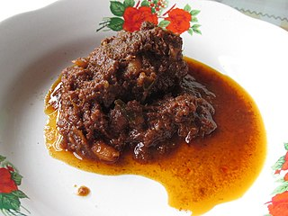

Rendang

Description
The sauce in this amazing Indonesian curry might be invisible, but you'll know it's there. As it reduces, the water evaporates, leaving behind the fat and flavor that make this dish so unique and addictive.
Originally, cooking meat this way helped preserve it in hot and humid Indonesia. Turns out, people continued making it long after refrigeration came around. Serve with steamed rice, garnished with cilantro and lime if desired.
Ingredients
- 2 ½ pounds beef chuck
- 4 shallots, sliced
- 6 cloves garlic
- 1 (1 1/2 inch) piece ginger, peeled and sliced
Steps
- Cut beef chuck into 2-inch pieces.
- Combine shallots, garlic, ginger, galangal, serrano and Fresno chiles, salt, red pepper flakes, coriander, turmeric, cardamom, and nutmeg in the bowl of a food processor. Pulse until paste is very finely ground, stopping occasionally to scrape down the sides with a spatula.
- Heat oil in a pan over medium heat. Add the curry paste. Cook and stir until it starts to dry out, then stir in the beef. Add coconut milk, tamarind paste, and brown sugar. Stir to combine. Fill up the empty can of coconut milk with water and pour it into the pan. Increase heat to medium-high; bring to a simmer.